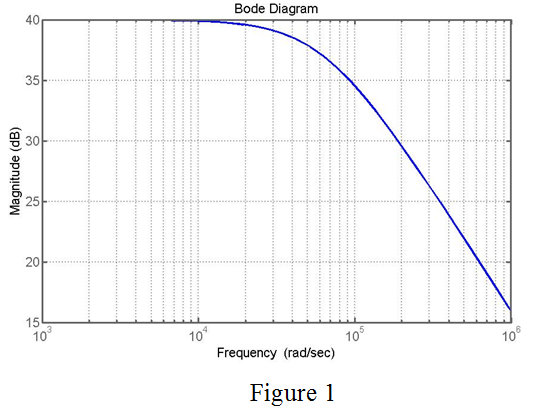

Step 1:
Refer to Table in problem 1.71 in the textbook.
From the table, it is a low pass filter circuit because for low frequencies, the gain is constant and for high frequencies, the gain decreases.
From the table, the maximum gain (dc gain) in dB is  .
.
Determine the value cut-off frequency at which the gain is less than maximum gain. That is, the frequency at gain . From the table, the frequency at gain  is,
is,
Step 2:
Determine the low pass circuit gain.
Here,
is the dc gain.
Determine the value of DC gain.

Substitute 0 for f.
From Table, the maximum value of gain in dB is .
Step 3:
Substitute for in the equation.
Step 4:
Therefore, the transfer function is,
Substitute for in the equation.
Step 5:
Apply logarithm on both sides.
Therefore, the magnitude at the frequency of is .
Determine the value of phase angle.
Therefore, the phase angle at the frequency of  is .
is .
Step 6:
Determine the phase angle at the frequency.
Therefore, the phase angle at the frequency of is .
Step 7:
Calculate the frequency at which gain is equal to zero.
Therefore, the frequency at which gain is 0 dB is .
Step 8:
Determine the phase angle at the frequency .
Therefore, the phase angle at the frequency of is .
Step 9:
Therefore, fill the values in the table.
| | | |
| 0 | 40 | 0 |
| 100 | 40 | 0 |
| 1000 | | |
| | 37 | |
| | 20 | |
| | 0 | |
Step 10:
Draw the magnitude frequency response plot.

Thus, the Bode plot is drawn.